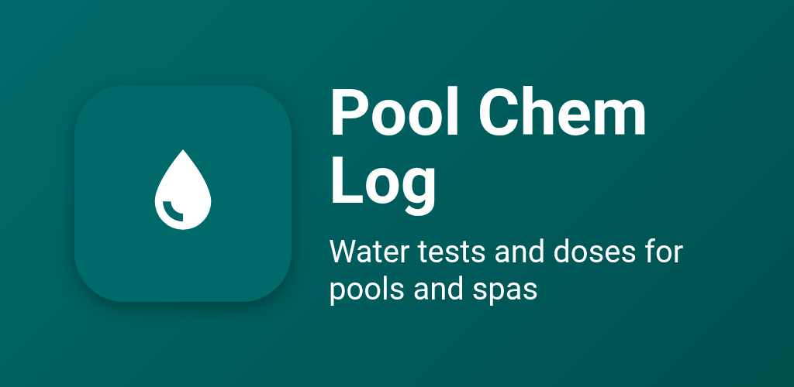
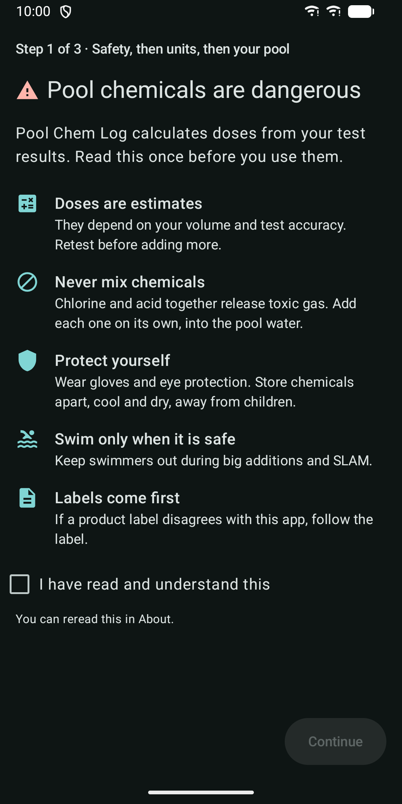
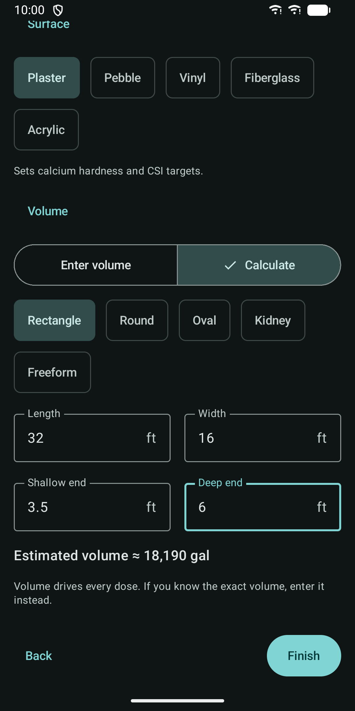
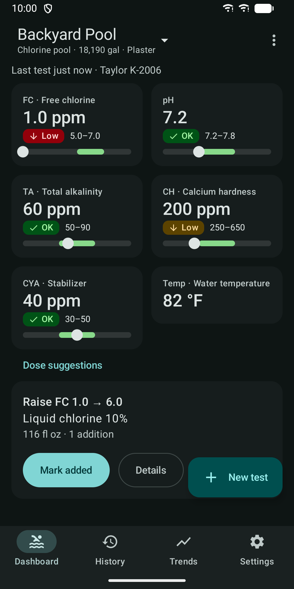
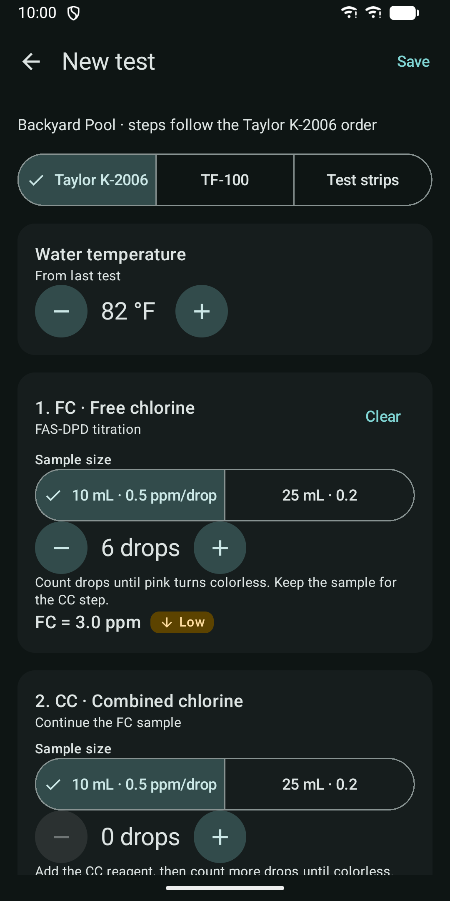
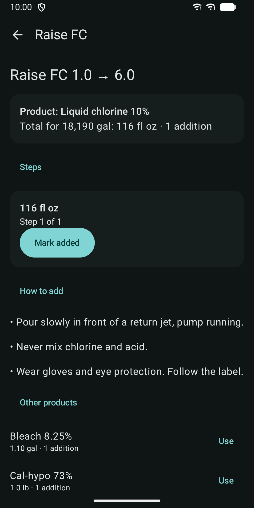
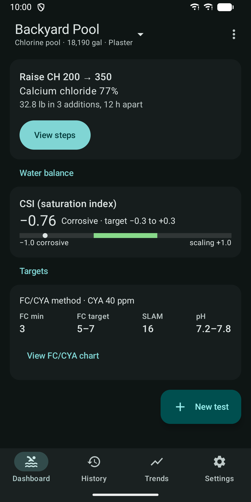
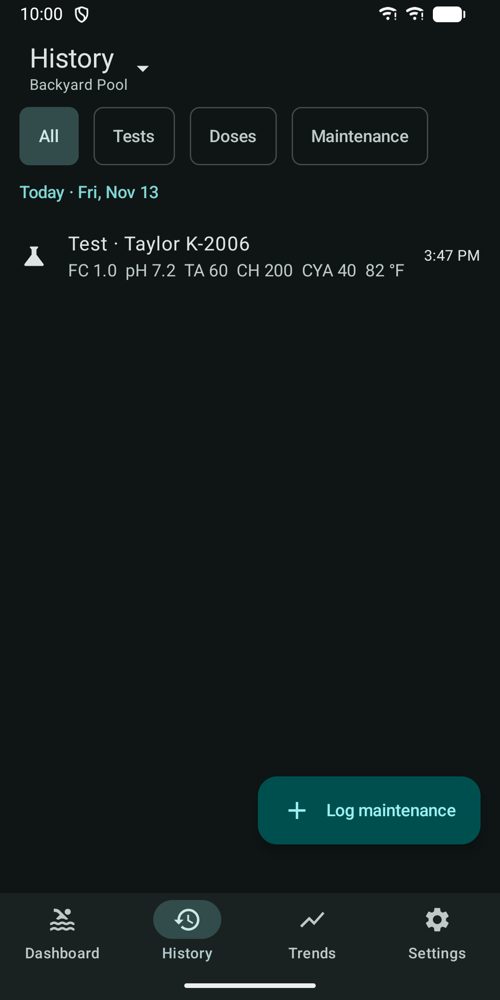
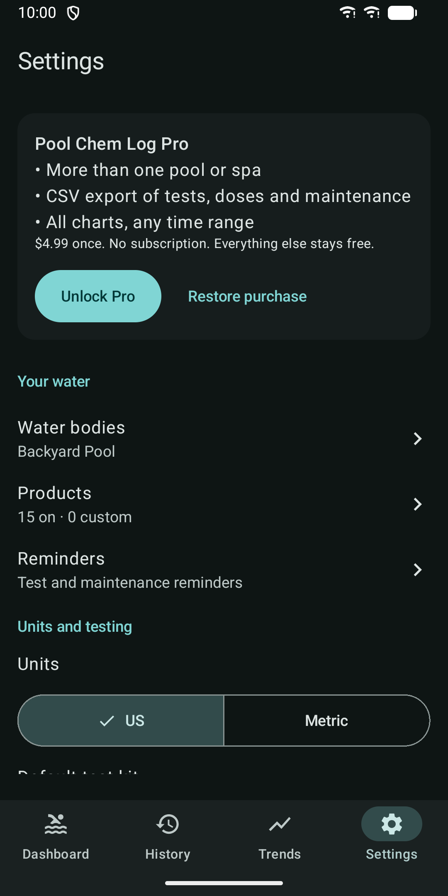

Pool Chem Log: Water Tests
Log pool and spa water tests and get FC/CYA dosing for chlorine, pH and more.









About
Pool Chem Log is a water test log and dose calculator for pools and spas. You enter your test results, see what is out of range, and get doses for the products you actually use. Targets follow the FC/CYA method, where the free chlorine target depends on your stabilizer (CYA) level. The app works without an internet connection. There is no account to create. The app does not have the internet permission, so your data stays on your phone. WATER BODIES Set up a chlorine pool, a salt water (SWG) pool, or a spa with chlorine or bromine. Enter the volume directly, or use the volume calculator for rectangle, round, oval, kidney and freeform shapes. The surface type (plaster, pebble, vinyl, fiberglass, acrylic) sets the calcium and saturation targets. US units are the default, and metric is available. TEST ENTRY THAT FOLLOWS YOUR KIT Choose Taylor K-2006, TF-100 or test strips. The kit sets the steps, the order and the precision. Count drops for FC, CC, TA, CH and salt, and pick pH, CYA and strip colors from the kit values. A partial test is fine. Water temperature is filled in from your last test. DOSING The app calculates doses for free chlorine, pH, total alkalinity, calcium hardness, stabilizer, salt and borates. It includes built-in products, and you can add your own products with any strength. Large changes are split into several additions with a wait time between them. Side effects are shown, for example that dichlor and trichlor add CYA, cal-hypo adds calcium, and acid lowers alkalinity. Salt water pools also get a suggested change to the cell output. One tap on Mark added records the dose, and the suggestions update. WATER BALANCE AND SLAM The calcite saturation index (CSI) takes borates and salt into account. A guided SLAM (Shock Level And Maintain) tracks the overnight chlorine loss test and shows the exit criteria. HISTORY, TRENDS AND REMINDERS One history lists tests, doses and maintenance such as filter cleaning, salt cell cleaning, water added and water drained. Trends show free chlorine and pH for the last 30 days. Reminders for testing and maintenance are scheduled on your device. A home screen widget shows your last readings and the next dose. YOUR DATA Everything is stored on your phone. The app has no ads, no analytics and no crash reporting. Android backup is supported. You can also export and import a JSON backup file. The file is plain text and not encrypted, and the app warns you before you export it. WHAT IS FREE AND WHAT NEEDS PRO Free: one pool or spa, full logging, dosing, CSI, SLAM, reminders, the widget, JSON backup and import, and the 30-day trends for free chlorine and pH. Pro is a single purchase inside the app, not a subscription. It adds more than one pool or spa, CSV export of tests, doses and maintenance, and all charts with any time range. If you restore a purchase on a new phone, use the same Google account. SAFETY Doses are estimates. Retest before you add more, never mix chemicals, wear protection, and follow the product label. If a label and the app disagree, follow the label. Targets are based on guidance published by Trouble Free Pool. Pool Chem Log is not affiliated with or endorsed by Trouble Free Pool.